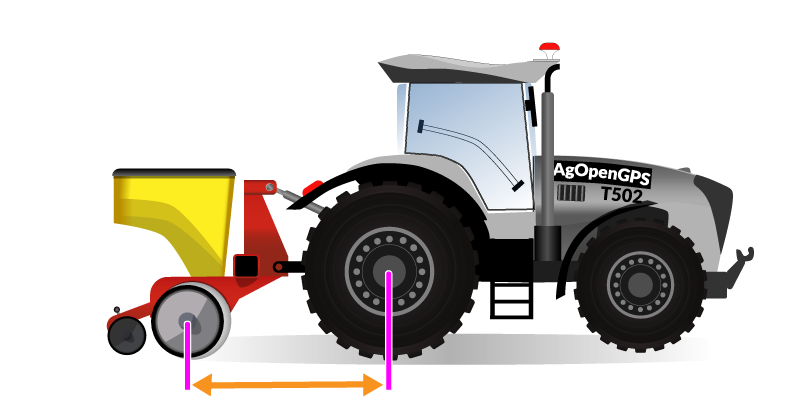
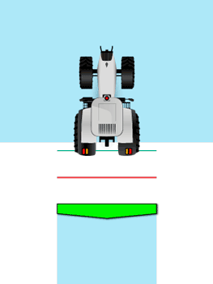

Implemento PilotX
Acople, enganche, desfase, secciones y anticipo del piloto
¿Cómo va enganchado el implemento?
Define cómo PilotX calcula la posición del implemento al doblar. Elegí la opción que más se parece.
Distancias del enganche
cm
Del eje trasero del tractor al punto donde cuelga el implemento
cm
Largo de la lanza: del enganche a las ruedas del implemento (solo de arrastre)
cm
De las ruedas del implemento a donde realmente trabaja (cuerpos/rejas). 0 si coinciden.
Vista lateral

El dibujo corresponde al estilo de acople elegido. Las medidas de la izquierda
son las flechas del dibujo, siempre desde el eje trasero del tractor hacia atrás.
Las que no aplican a tu acople quedan deshabilitadas.
Desfase lateral
Si el implemento no trabaja centrado con el tractor, indicá cuánto y hacia qué lado.
cm
Con 0 cm el implemento queda centrado y el lado no importa.
Traslape entre pasadas
Cuánto se pisan (o se separan) las pasadas vecinas. Traslape evita franjas sin trabajar; diferencia deja un hueco a propósito.
cm
Cómo se divide el ancho de trabajo
De 1 a 16 secciones
cm
Todas las secciones miden lo mismo; el total es secciones × ancho
Cada zona agrupa secciones consecutivas (para el control por relés)
—
cm por sección
—
m de ancho total
cm
Trenes de siembra
Se configuran en Configuración → Secciones: ahí elegís los trenes, la distancia del trasero y qué surco va en cada uno.
Anticipo de secciones
Cuánto se adelanta PilotX a prender o apagar cada sección para compensar la demora del equipo (válvulas, dosificadores). Se mide en segundos.

s
Prende la sección este tiempo antes de entrar a zona sin trabajar

s
Apaga la sección este tiempo antes de pisar lo ya trabajado

s
Demora extra antes de cortar (evita parpadeo en bordes)